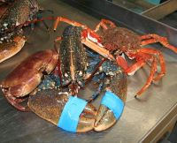
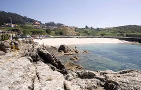

| Marisco |  |
| i-Rochiño | |
A Guarda es uno de los enclaves turísticos más importantes de Galicia, en gran parte por el Monte Trega, lugar de visita obligada por sus interesantes valores arqueológicos.
 A Guarda es ese sitio a la que la gente va cuando tiene hambre. Productos de calidad, cantidad y sabor. Todo esto se junta y sale la gran gastronomía guardesa.
A Guarda es ese sitio a la que la gente va cuando tiene hambre. Productos de calidad, cantidad y sabor. Todo esto se junta y sale la gran gastronomía guardesa.
El casco urbano se organiza en torno al puerto pesquero, reflejo del pasado y presente marinero de A Guarda.
En el privilegiado entorno natural que forma la desembocadura del río Miño se localizan estas cuatro playas a lo largo de los últimos dos kilómetros de la desembocadura y que forman una perfecta unidad.
Otras paginas: